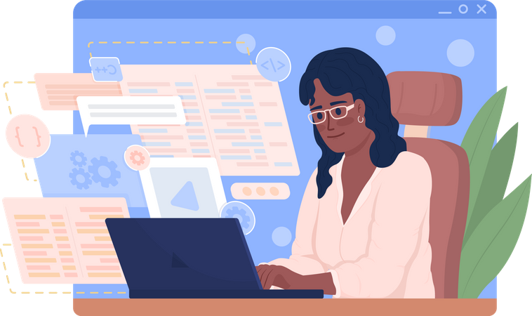

Hey, I am
Alankrita!
and I am a

LET ME INTRODUCE MYSELF
Welcome to my Portfolio. I got into front end development two years ago because it was a form of programming that let me visualize my progress and results in a quicker and more literal way than other types of programming. While I initially tried it out as a test run to see if I'd be into programming in general I fell in love with the process and I've been doing it ever since. 🤷♂️
I am fluent in classics like Java, Javascript and Python.
My field of Interests are building new Web Technologies and Products.